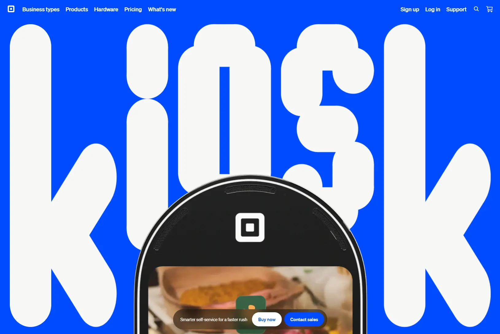

Square Kiosk
- Лендинг
- Сервисы и приложения
- ИИ-сервисы
- Ресторанам
- Минимализм
- Игривый
- Светлая тема
- Нейтральный фон
- Видео-фон
- Анимация типографики
- Параллакс
- Микроанимации
- SvelteKit
- Contentful
- Cloudflare
- Lenis
- Datadog RUM
- OneTrust
- Google Analytics
- Мультиязычный сайт
- США
- Действующий сайт

Что это
Лендинг Square Kiosk — терминала самообслуживания для кафе и ресторанов: экран 21,5 дюйма, заказ голосом или касанием, оплата на месте и подсказки на основе данных о продажах. Страница показывает, как киоск встраивается в кассу и кухню, и сколько стоит: 1 999 долларов за устройство или 97 долларов в месяц. Стильный лендинг терминала самообслуживания с функцией заказа голосом. Хорошие анимации и рендеры.
Что смотреть в первую очередь
Начать с первого экрана: гигантская надпись KIOSK, видео-фон и рендер устройства. Дальше — блок «How kiosk works» про голосовой заказ и подсказки.
Приёмы
- Видео-фон
- Анимация типографики
- Параллакс
- Микроанимации
Интересные факты
- Киоск с экраном 21,5 дюйма просыпается, когда гость подходит: заказать можно голосом или касанием, а оплатить — картой прямо на экране.
- Голосовой заказ понимает обычную речь: гость спрашивает, что в блюде или что подойдёт детям, и меню фильтруется; в устройстве три направленных микрофона с шумоподавлением.
- Подсказки в заказе строятся на данных о продажах: что чаще берут в это время дня или вместе с выбранным блюдом.
- Надпись KIOSK на первом экране собрана из отдельных частей: в стилях есть переменные, которые двигают буквы при появлении и прокрутке.
- Демонстрационные ролики заказа — рамен, бабл-ти, греческая кухня, аэропорт — встроены без звука, зациклены и подключаются скриптом, а не сразу.
- Страница собрана на SvelteKit: об этом говорит заголовок ответа x-sveltekit-page и служебные классы вида svelte-qcszr4.
- Из этой сети сайт отвечает 403 Cloudflare, поэтому разметку читали из веб-архива, а заголовки и метаданные — через microlink.
Паспорт
- Домен
- squareup.com
- Тип сайта
- Лендинг
- Категории
- Сервисы и приложения
- Подкатегории
- ИИ-сервисы
- Для кого
- Ресторанам
- Стиль
- Минимализм, Игривый
- Язык
- Мультиязычный, Английский, Французский, Японский
- Страна
- США
- Автор
- Square (Block, Inc.)
- Год
- 2026
- Добавлен в коллекцию
- 08.11.2026
Палитра
-
#F7F7F5— 44% кадра -
#004BFF— 37% кадра -
#202020— 10% кадра -
#AF784D— 2% кадра -
#5C432C— 2% кадра
- Режим
- Светлая
- Цвет фона
- Нейтральный
Технологии
- SvelteKit
- Contentful
- Cloudflare
- Lenis
- Datadog RUM
- OneTrust
- Google Analytics (Universal Analytics)